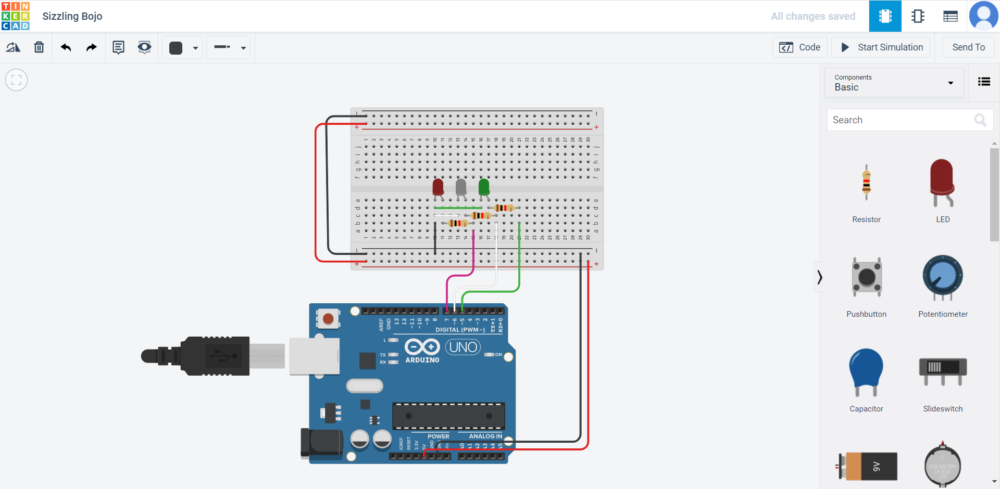

Introduction
This is my Arduino Test Log. What is it purpose? To document my practise of using the Arduino board and thinkcad.
A quick info dump about Arduino: An Arduino Embedded System is made of both software and hardware. It uses Software Tool such as an Intergrated Development System (IDE), Arduino progarmming language (Based on Processing), Development & Debugging Tools and Software libraries. It has Hardware such as a ATmel processor boards (and others), Shields which are add on modules, Sensors, Actuators and peripherals. It is also an Open Source Platform which means anyone and everyone can use it, which also means it is easier to get help thorugh online fourms and such.
Why do I use it?: It is Open Source. Thus I would be able to get help easily and there are tons of libraries made for it, which means if I need a function like to control a stepper motor as an example, I can look up a library that has premade code to control one. Saving me time. It is also inexpensive, lots of clones, 3rd party manufacturers making it an ideal learning / teaching material due to how easy it is to get. It also has a Simple, clear programming environment using GUI which is pretty good. Not to mention that it is also Cross-platform (Windows, MacOSx, Linux). Although I never found it useful, it means you can use it no matter what computer you are using which means it is accessible to everyone.
Getting Started
| Example | |
|---|---|
 |
To get started on coding an arduino, you will of course need an arduino. My school provided us with an Arduino Uno to use, but you can use similar arduino boards. The sceond most impoartant thing you will need is a breadboard. Although you can make these circuits without a arduino board, a breadboard will certainly help with the standardization. Lastly you will need the componets such as wires, LEDs, resistors and push button switch. |
Additional Help
I will be using thinkercad to simulate my code first. This is help save time as I can troubleshoot the code in an online software first before making.
Q1: Connect a LED and a current limiting resistor and blink LED in different patterns
| Example | Comments |
|---|---|
|
This first part is pretty easy. I assign the LED output pin to pin 8 and made it blink in 1 sec (1000ms) inervals. |
|
 |
When wiring this circuit, I forgot to attach the breadboard to 5v and Gnd. Apart from that careless mistake nothing went wrong. |
Q2 Control 3 or more LEDs
| Example | Comments |
|---|---|
|
I added a push button switch to pin 6. I noticed I in thinkercad I forgot to wire it to 5V and so I fixed it. I added a resistor between the arduino and gnd. This resistor is known as a 'pulldown' resistor it gives an arduino pin a weak gnd connection so the pin is never 'floating'. Since electricity takes the path of least resistance so when the button is pressed, the pin will sense the connection to power more strongly and ignore the weak connection to gnd. Without this resistor, the floating could be affect by things like static electricity and give unreliable readings. |
|
 |
2 issues cropped up while making this circuit. Firstly the pin the yellow LED was attach to did not light up. After troubleshooting, I found out that pin 6 might be damaged. Secondly, the resistor used for the yellow led was stronger than the ones used for the red and green one. Thus the yellow led appeared dimmer. To fix this I removed the resistor connecting the yellow led. |
Q3 Adding a switch to flashing lights
| Example | Comments |
|---|---|
|  |
I had zero issues wiring this circuit in thinkercad. |
 |
I forogt to record the video used for this circuit so I recreated it with the next one and just wired the switch to turn them on and off. |
Q4 Using a switch to control the type of light-up and flashing of LEDs
| Example | Comments |
|---|---|
|
To make the LEDs light up with different pushes of the button, I created a 'counter' which counts up to 5 before reseting. Each time it counts up, I will tell it to turn on a different LED. This can be repeated infiniantly because the counter resets at the end. |
|
 |
Had an issue with my computer not being able to dectect the port of the arduino. I had to manually change in the software. Tools > Port > Port 3 (Generally what most computers used when conneting to an arduino.) |
Q5 Modify program in Q4 to flash LEDs
| Example | Comments |
|---|---|
 |
I added a delay to all of the leds when they light up so they will 'flash'. |
555 Assignment
This circuit is producing a square wave using the 555 ic chip to wire up a 555 timer circuit.
Using a Sine Wave can cause fluctuations in voltage being provided which will result in motor control to be inaccurate.
An Oscillscope is used to display the voltage wave form.
By adjusting the capcaitor values, the rate of blinks the LED makes can be adjusted,